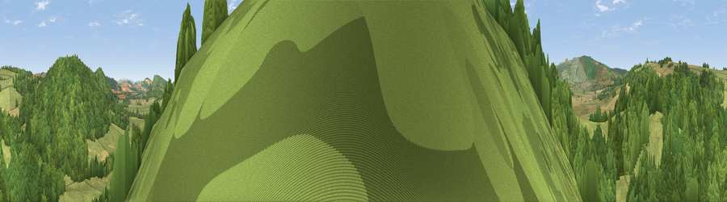

Viewpoint near Kington
#35297 in England · top 90% of its area beats it · near Kington · open accessWhere it is
The exact computed spot (SO 28475 61175). Click the marker for map links.
Public access: this spot lies on mapped open-access land (CRoW Act 2000) — you may roam here on foot. Computed from Natural England's CRoW access layer and OpenStreetMap rights of way — not the legal definitive map. Always verify locally.
The view, rendered

A 360° render of this exact spot computed from the terrain model, tree cover and land cover — summer colours, afternoon light, calibrated against photographs of famous viewpoints. Real trees, hedges and buildings will differ in detail.
The panorama
Grey silhouette: terrain skyline in each direction (720 bearings, Earth curvature and refraction included). Dashed green: skyline with trees (+15 m) and buildings (+8 m) as obstacles. Blue strip: how far the ground is visible on each bearing.
Where the view opens
Wedge length = distance to the farthest visible ground on that bearing (vegetation-aware). Rings at 10, 25 and 50 km.
What fills the view
66% woodland · 32% grassland · 1% cropland
Angular shares of the visible panorama (visual magnitude), not map area. Landscape diversity 0.30 (0–1 Shannon).
Key numbers
More beautiful places nearby
The staircase of upgrades: each row has a higher view potential than everything closer. Driving times are estimates from straight-line distance, calibrated against real road routing — check an actual route before setting out.
| Place | Direction | Drive | Score |
|---|---|---|---|
| Hazel Point | NNE · 1 km | ~2 min | 37.0 |
| Viewpoint near Titley | NE · 1 km | ~3 min | 55.9 |
| Rushock Hill | SSE · 2 km | ~4 min | 80.2 |
| Merbach Hill | S · 17 km | ~29 min | 81.1 |
| Gatley Hill | ENE · 18 km | ~31 min | 82.6 |
| Viewpoint near Asterton | NNE · 30 km | ~47 min | 83.0 |
| Titterstone Clee | ENE · 35 km | ~53 min | 83.8 |
| Garway Hill | SSE · 39 km | ~58 min | 84.6 |
52.24409, -3.04898 · source: screening · position refined by local search. Computed location — check access rights before visiting.